공인중개사-2차 (2021-10-30 기출문제)
1과목: 임의구분
1. 공인중개사법령상 중개대상물에 해당하는 것은? (다툼이 있으면 판례에 따름)
- 토지에서 채굴되지 않은 광물
- 영업상 노하우 등 무형의 재산적 가치
- 토지로부터 분리된 수목
- 지목(地目)이 양어장인 토지
- 주택이 철거될 경우 일정한 요건하에 택지개발지구 내 이주자택지를 공급받을 수 있는 지위
(정답률: 42%)

2. 공인중개사법령상 공인중개사 정책심의위원회(이하 '위원회'라 함)에 관한 설명으로 옳은 것을 모두 고른 것은?
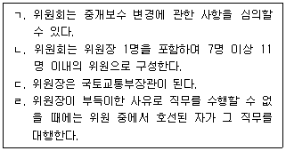
- ㄱ, ㄴ
- ㄱ, ㄷ
- ㄷ, ㄹ
- ㄱ, ㄴ, ㄷ
- ㄱ, ㄴ, ㄹ
(정답률: 36%)
3. 2020. 10. 1. 甲과 乙은 甲소유의 X토지에 관해 매매계약을 체결하였다. 乙과 丙은 ｢농지법｣상 농지소유제한을 회피할 목적으로 명의신탁 약정을 하였다. 그 후 甲은 乙의 요구에 따라 丙명의로 소유권이전등기를 마쳐주었다. 그 사정을 아는 개업공인중개사가 X토지의 매수의뢰인에게 설명한 내용으로 옳은 것을 모두 고른 것은? (다툼이 있으면 판례에 따름)
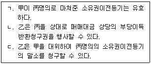
- ㄱ
- ㄴ
- ㄷ
- ㄱ, ㄴ
- ㄴ, ㄷ
(정답률: 24%)
4. 분묘가 있는 토지에 관하여 개업공인중개사가 중개의뢰인에게 설명한 내용으로 틀린 것은? (다툼이 있으면 판례에 따름)
- 분묘기지권은 등기사항증명서를 통해 확인할 수 없다.
- 분묘기지권은 분묘의 설치 목적인 분묘의 수호와 제사에 필요한 범위 내에서 분묘 기지 주위의 공지를 포함한 지역에까지 미친다.
- 분묘기지권이 인정되는 경우 분묘가 멸실되었더라도 유골이 존재하여 분묘의 원상회복이 가능하고 일시적인 멸실에 불과하다면 분묘기지권은 소멸하지 않는다.
- 분묘기지권에는 그 효력이 미치는 범위 안에서 새로운 분묘를 설치할 권능은 포함되지 않는다.
- 甲이 자기 소유 토지에 분묘를 설치한 후 그 토지를 乙에게 양도하면서 분묘를 이장하겠다는 특약을 하지 않음으로써 甲이 분묘기지권을 취득한 경우, 특별한 사정이 없는 한 甲은 분묘의 기지에 대한 토지사용의 대가로서 지료를 지급할 의무가 없다.
(정답률: 48%)
5. 공인중개사법령상 중개대상물의 표시ㆍ광고 및 모니터링에 관한 설명으로 틀린 것은?
- 개업공인중개사는 의뢰받은 중개대상물에 대하여 표시ㆍ광고를 하려면 개업공인중개사, 소속공인중개사 및 중개보조원에 관한 사항을 명시해야 한다.
- 개업공인중개사는 중개대상물이 존재하지 않아서 실제로 거래를 할 수 없는 중개대상물에 대한 광고와 같은 부당한 표시ㆍ광고를 해서는 안 된다.
- 개업공인중개사는 중개대상물의 가격 등 내용을 과장되게 하는 부당한 표시ㆍ광고를 해서는 안 된다.
- 국토교통부장관은 인터넷을 이용한 중개대상물에 대한 표시ㆍ광고의 규정준수 여부에 관하여 기본 모니터링과 수시 모니터링을 할 수 있다.
- 국토교통부장관은 인터넷 표시ㆍ광고 모니터링 업무 수행에 필요한 전문인력과 전담조직을 갖췄다고 국토교통부장관이 인정하는 단체에게 인터넷 표시ㆍ광고 모니터링 업무를 위탁할 수 있다.
(정답률: 53%)
6. 개업공인중개사가 집합건물의 매매를 중개하면서 설명한 내용으로 틀린 것은? (다툼이 있으면 판례에 따름)
- 아파트 지하실은 특별한 사정이 없는 한 구분소유자 전원의 공용부분으로, 따로 구분소유의 목적이 될 수 없다.
- 전유부분이 주거 용도로 분양된 경우, 구분소유자는 정당한 사유 없이 그 부분을 주거 외의 용도로 사용해서는 안 된다.
- 구분소유자는 구조상 구분소유자 전원의 공용에 제공된 건물 부분에 대한 공유지분을 그가 가지는 전유부분과 분리하여 처분할 수 없다.
- 규약으로써 달리 정한 경우에도 구분소유자는 그가 가지는 전유부분과 분리하여 대지사용권을 처분할 수 없다.
- 일부의 구분소유자만이 공용하도록 제공되는 것임이 명백한 공용부분은 그들 구분소유자의 공유에 속한다.
(정답률: 39%)
7. 공인중개사법령상 개업공인중개사의 고용인에 관한 설명으로 틀린 것은?
- 개업공인중개사는 중개보조원과 고용관계가 종료된 경우 그 종료일부터 10일 이내에 등록관청에 신고해야 한다.
- 소속공인중개사의 고용신고를 받은 등록관청은 공인중개사 자격증을 발급한 시ㆍ도지사에게 그 소속공인중개사의 공인중개사 자격 확인을 요청해야 한다.
- 중개보조원뿐만 아니라 소속공인중개사의 업무상 행위는 그를 고용한 개업공인중개사의 행위로 본다.
- 개업공인중개사는 중개보조원을 고용한 경우, 등록관청에 신고한 후 업무개시 전까지 등록관청이 실시하는 직무교육을 받도록 해야 한다.
- 중개보조원의 고용신고를 받은 등록관청은 그 사실을 공인중개사협회에 통보해야 한다.
(정답률: 30%)
8. 공인중개사법령상 중개사무소의 명칭 및 등록증 등의 게시에 관한 설명으로 틀린 것은? (다툼이 있으면 판례에 따름)
- 법인인 개업공인중개사의 분사무소에는 분사무소설치신고확인서 원본을 게시해야 한다.
- 소속공인중개사가 있는 경우 그 소속공인중개사의 공인중개사자격증 원본도 게시해야 한다.
- 개업공인중개사가 아닌 자가 '부동산중개'라는 명칭을 사용한 경우, 3년 이하의 징역 또는 3천만원 이하의 벌금에 처한다.
- 무자격자가 자신의 명함에 '부동산뉴스 대표'라는 명칭을 기재하여 사용하였다면 공인중개사와 유사한 명칭을 사용한 것에 해당한다.
- 공인중개사인 개업공인중개사가 ｢옥외광고물 등의 관리와 옥외광고산업 진흥에 관한 법률｣에 따른 옥외광고물을 설치하는 경우, 중개사무소등록증에 표기된 개업공인중개사의 성명을 표기해야 한다.
(정답률: 30%)
9. 공인중개사법령상 중개사무소 개설등록에 관한 설명으로 옳은 것을 모두 고른 것은?
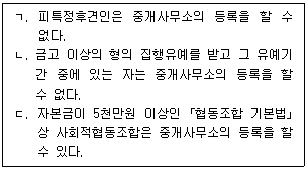
- ㄱ
- ㄴ
- ㄱ, ㄴ
- ㄱ, ㄷ
- ㄴ, ㄷ
(정답률: 28%)
10. 공인중개사법령상 법인인 개업공인중개사의 업무범위에 해당하지 않는 것은? (단, 다른 법령의 규정은 고려하지 않음)
- 주택의 임대관리
- 부동산 개발에 관한 상담 및 주택의 분양대행
- 개업공인중개사를 대상으로 한 공제업무의 대행
- ｢국세징수법｣상 공매대상 부동산에 대한 취득의 알선
- 중개의뢰인의 의뢰에 따른 이사업체의 소개
(정답률: 30%)
11. 공인중개사법령상 '중개대상물의 확인ㆍ설명사항'과 '전속중개계약에 따라 부동산거래정보망에 공개해야 할 중개대상물에 관한 정보'에 공통으로 규정된 것을 모두 고른 것은?
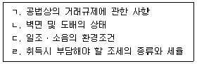
- ㄱ, ㄴ
- ㄷ, ㄹ
- ㄱ, ㄴ, ㄷ
- ㄴ, ㄷ, ㄹ
- ㄱ, ㄴ, ㄷ, ㄹ
(정답률: 30%)
12. 매수신청대리인으로 등록한 개업공인중개사 甲이 매수신청대리 위임인 乙에게 ｢공인중개사의 매수신청대리인 등록 등에 관한 규칙｣에 관하여 설명한 내용으로 틀린 것은? (단, 위임에 관하여 특별한 정함이 없음)
- 甲의 매수신고액이 차순위이고 최고가매수신고액에서 그 보증액을 뺀 금액을 넘는 때에만 甲은 차순위매수신고를 할 수 있다.
- 甲은 乙을 대리하여 입찰표를 작성ㆍ제출할 수 있다.
- 甲의 입찰로 乙이 최고가매수신고인이나 차순위매수신고인이 되지 않은 경우, 甲은 ｢민사집행법｣에 따라 매수신청의 보증을 돌려 줄 것을 신청할 수 있다.
- 乙의 甲에 대한 보수의 지급시기는 당사자 간 약정이 없으면 매각허가결정일로 한다.
- 甲은 기일입찰의 방법에 의한 매각기일에 매수신청대리행위를 할 때 집행법원이 정한 매각장소 또는 집행법원에 직접 출석해야 한다.
(정답률: 24%)
13. ｢전자문서 및 전자거래 기본법｣에 따른 공인전자문서센터에 보관된 경우, 공인중개사법령상 개업공인중개사가 원본, 사본 또는 전자문서를 보존기간 동안 보존해야 할 의무가 면제된다고 명시적으로 규정된 것을 모두 고른 것은?
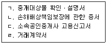
- ㄱ
- ㄱ, ㄹ
- ㄴ, ㄷ
- ㄴ, ㄷ, ㄹ
- ㄱ, ㄴ, ㄷ, ㄹ
(정답률: 24%)
14. 공인중개사법령상 거래정보사업자지정대장 서식에 기재되는 사항이 아닌 것은?
- 지정 번호 및 지정 연월일
- 상호 또는 명칭 및 대표자의 성명
- 주된 컴퓨터설비의 내역
- 전문자격자의 보유에 관한 사항
- ｢전기통신사업법｣에 따른 부가통신사업자번호
(정답률: 36%)
15. 공인중개사법령상 손해배상책임의 보장에 관한 설명으로 틀린 것은?
- 개업공인중개사는 중개가 완성된 때에는 거래당사자에게 손해배상책임의 보장기간을 설명해야 한다.
- 개업공인중개사는 고의로 거래당사자에게 손해를 입힌 경우에는 재산상의 손해뿐만 아니라 비재산적 손해에 대해서도 공인중개사법령상 손해배상책임보장규정에 의해 배상할 책임이 있다.
- 개업공인중개사가 자기의 중개사무소를 다른 사람의 중개행위의 장소로 제공하여 거래당사자에게 재산상의 손해를 발생하게 한 때에는 그 손해를 배상할 책임이 있다.
- 법인인 개업공인중개사가 분사무소를 두는 경우 분사무소마다 추가로 1억원 이상의 손해배상책임의 보증설정을 해야 하나 보장금액의 상한은 없다.
- 지역농업협동조합이 ｢농업협동조합법｣에 의해 부동산중개업을 하는 경우 보증기관에 설정하는 손해배상책임보증의 최저보장금액은 개업공인중개사의 최저보장금액과 다르다.
(정답률: 53%)
16. 공인중개사법령상 공인중개사인 개업공인중개사가 중개사무소를 등록관청의 관할 지역 내로 이전한 경우에 관한 설명으로 틀린 것을 모두 고른 것은?
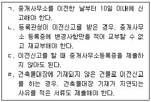
- ㄱ, ㄴ
- ㄱ, ㄹ
- ㄴ, ㄷ
- ㄷ, ㄹ
- ㄴ, ㄷ, ㄹ
(정답률: 36%)
17. 공인중개사법령상 중개업의 휴업 및 재개신고 등에 관한 설명으로 옳은 것은?
- 개업공인중개사가 3개월의 휴업을 하려는 경우 등록관청에 신고해야 한다.
- 개업공인중개사가 6개월을 초과하여 휴업을 할 수 있는 사유는 취학, 질병으로 인한 요양, 징집으로 인한 입영에 한한다.
- 개업공인중개사가 휴업기간 변경신고를 하려면 중개사무소등록증을 휴업기간변경신고서에 첨부하여 제출해야 한다.
- 재개신고는 휴업기간 변경신고와 달리 전자문서에 의한 신고를 할 수 없다.
- 재개신고를 받은 등록관청은 반납을 받은 중개사무소등록증을 즉시 반환해야 한다.
(정답률: 30%)
18. 공인중개사법령상 개업공인중개사가 지체 없이 사무소의 간판을 철거해야 하는 사유를 모두 고른 것은?
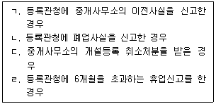
- ㄹ
- ㄱ, ㄷ
- ㄴ, ㄷ
- ㄱ, ㄴ, ㄷ
- ㄱ, ㄴ, ㄷ, ㄹ
(정답률: 30%)
19. 공인중개사법령상 중개행위 등에 관한 설명으로 옳은 것은? (다툼이 있으면 판례에 따름)
- 중개행위에 해당하는지 여부는 개업공인중개사의 행위를 객관적으로 보아 판단할 것이 아니라 개업공인중개사의 주관적 의사를 기준으로 판단해야 한다.
- 임대차계약을 알선한 개업공인중개사가 계약 체결 후에도 목적물의 인도 등 거래당사자의 계약상 의무의 실현에 관여함으로써 계약상 의무가 원만하게 이행되도록 주선할 것이 예정되어 있는 경우, 그러한 개업공인중개사의 행위는 사회통념상 중개행위의 범주에 포함된다.
- 소속공인중개사는 자신의 중개사무소 개설등록을 신청할 수 있다.
- 개업공인중개사는 거래계약서를 작성하는 경우 거래계약서에 서명하거나 날인하면 된다.
- 개업공인중개사가 국토교통부장관이 정한 거래계약서 표준서식을 사용하지 않는 경우 과태료부과처분을 받게 된다.
(정답률: 48%)
20. 부동산 거래신고 등에 관한 법령상 벌금 또는 과태료의 부과기준이 '계약 체결 당시의 개별공시지가에 따른 해당 토지가격' 또는 '해당 부동산등의 취득가액'의 비율 형식으로 규정된 경우가 아닌 것은?
- 토지거래허가구역 안에서 허가 없이 토지거래계약을 체결한 경우
- 외국인이 부정한 방법으로 허가를 받아 토지취득계약을 체결한 경우
- 토지거래허가구역 안에서 속임수나 그 밖의 부정한 방법으로 토지거래계약 허가를 받은 경우
- 부동산매매계약을 체결한 거래당사자가 그 실제거래가격을 거짓으로 신고한 경우
- 부동산매매계약을 체결한 후 신고 의무자가 아닌 자가 거짓으로 부동산거래신고를 한 경우
(정답률: 18%)
21. 개업공인중개사 甲, 乙, 丙에 대한 ｢공인중개사법｣ 제40조(행정제재처분효과의 승계 등)의 적용에 관한 설명으로 옳은 것을 모두 고른 것은?
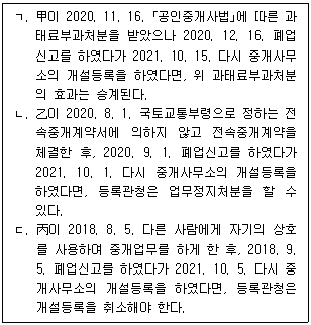
- ㄱ
- ㄱ, ㄴ
- ㄱ, ㄷ
- ㄴ, ㄷ
- ㄱ, ㄴ, ㄷ
(정답률: 18%)
22. 개업공인중개사 甲의 중개로 乙과 丙은 丙소유의 주택에 관하여 임대차계약(이하 '계약'이라 함)을 체결하려 한다. ｢주택임대차보호법｣의 적용에 관한 甲의 설명으로 틀린 것은? (임차인 乙은 자연인임)
- 乙과 丙이 임대차기간을 2년 미만으로 정한다면 乙은 그 임대차기간이 유효함을 주장할 수 없다.
- 계약이 묵시적으로 갱신되면 임대차의 존속기간은 2년으로 본다.
- 계약이 묵시적으로 갱신되면 乙은 언제든지 丙에게 계약해지를 통지할 수 있고, 丙이 그 통지를 받은 날부터 3개월이 지나면 해지의 효력이 발생한다.
- 乙이 丙에게 계약갱신요구권을 행사하여 계약이 갱신되면, 갱신되는 임대차의 존속기간은 2년으로 본다.
- 乙이 丙에게 계약갱신요구권을 행사하여 계약이 갱신된 경우 乙은 언제든지 丙에게 계약해지를 통지할 수 있다.
(정답률: 23%)
23. 공인중개사법령상 공인중개사 자격의 취소사유에 해당하는 것을 모두 고른 것은?
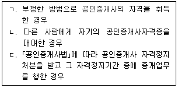
- ㄱ
- ㄷ
- ㄱ, ㄴ
- ㄴ, ㄷ
- ㄱ, ㄴ, ㄷ
(정답률: 36%)
24. ｢공인중개사법｣의 내용으로 ( )에 들어갈 숫자를 바르게 나열한 것은?
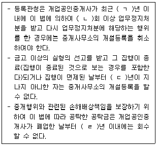
- ㄱ: 1, ㄴ: 2, ㄷ: 1, ㄹ: 3
- ㄱ: 1, ㄴ: 2, ㄷ: 3, ㄹ: 3
- ㄱ: 1, ㄴ: 3, ㄷ: 3, ㄹ: 1
- ㄱ: 2, ㄴ: 3, ㄷ: 1, ㄹ: 1
- ㄱ: 2, ㄴ: 3, ㄷ: 3, ㄹ: 3
(정답률: 30%)
25. 공인중개사법령상 중개사무소 개설등록을 취소하여야 하는 사유에 해당하는 것을 모두 고른 것은?
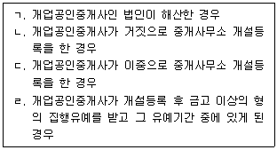
- ㄱ, ㄴ, ㄷ
- ㄱ, ㄴ, ㄹ
- ㄱ, ㄷ, ㄹ
- ㄴ, ㄷ, ㄹ
- ㄱ, ㄴ, ㄷ, ㄹ
(정답률: 36%)
26. 공인중개사법령상 개업공인중개사의 보증설정 등에 관한 설명으로 옳은 것은?
- 개업공인중개사가 보증설정신고를 할 때 등록관청에 제출해야 할 증명서류는 전자문서로 제출할 수 없다.
- 보증기관이 보증사실을 등록관청에 직접 통보한 경우라도 개업공인중개사는 등록관청에 보증설정신고를 해야 한다.
- 보증을 다른 보증으로 변경하려면 이미 설정된 보증의 효력이 있는 기간이 지난 후에 다른 보증을 설정해야 한다.
- 보증변경신고를 할 때 손해배상책임보증 변경신고서 서식의 “보증”란에 '변경 후 보증내용'을 기재한다.
- 개업공인중개사가 보증보험금으로 손해배상을 한 때에는 그 보증보험의 금액을 보전해야 하며 다른 공제에 가입할 수 없다.
(정답률: 24%)
27. 공인중개사법령상 공인중개사협회(이하 '협회'라 함)에 관한 설명으로 틀린 것은?
- 협회는 시ㆍ도지사로부터 위탁을 받아 실무교육에 관한 업무를 할 수 있다.
- 협회는 공제사업을 하는 경우 책임준비금을 다른 용도로 사용하려면 국토교통부장관의 승인을 얻어야 한다.
- 협회는 ｢공인중개사법｣에 따른 협회의 설립목적을 달성하기 위한 경우에도 부동산 정보제공에 관한 업무를 수행할 수 없다.
- 협회에 관하여 ｢공인중개사법｣에 규정된 것 외에는 ｢민법｣중 사단법인에 관한 규정을 적용한다.
- 협회는 공제사업을 다른 회계와 구분하여 별도의 회계로 관리해야 한다.
(정답률: 42%)
28. 공인중개사법령상 포상금을 지급받을 수 있는 신고 또는 고발의 대상이 아닌 것은?
- 중개사무소의 개설등록을 하지 않고 중개업을 한 자
- 부정한 방법으로 중개사무소의 개설등록을 한 자
- 공인중개사자격증을 다른 사람으로부터 양수받은 자
- 개업공인중개사로서 부당한 이익을 얻을 목적으로 거짓으로 거래가 완료된 것처럼 꾸미는 등 중개대상물의 시세에 부당한 영향을 줄 우려가 있는 행위를 한 자
- 개업공인중개사로서 중개의뢰인과 직접 거래를 한 자
(정답률: 30%)
29. 공인중개사법령상 개업공인중개사에 대한 업무정지처분을 할 수 있는 사유에 해당하는 것을 모두 고른 것은?
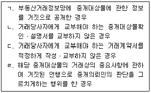
- ㄱ, ㄷ
- ㄴ, ㄹ
- ㄱ, ㄴ, ㄷ
- ㄴ, ㄷ, ㄹ
- ㄱ, ㄴ, ㄷ, ㄹ
(정답률: 24%)
30. 공인중개사법령상 소속공인중개사로서 업무를 수행하는 기간 동안 발생한 사유 중 자격정지사유로 규정되어 있지 않은 것은?
- 둘 이상의 중개사무소에 소속된 경우
- 성실ㆍ정확하게 중개대상물의 확인ㆍ설명을 하지 않은 경우
- 등록관청에 등록하지 않은 인장을 사용하여 중개행위를 한 경우
- ｢공인중개사법｣을 위반하여 징역형의 선고를 받은 경우
- 중개대상물의 매매를 업으로 하는 행위를 한 경우
(정답률: 28%)
31. 공인중개사법령상 개업공인중개사의 행위 중 과태료 부과대상이 아닌 것은?
- 중개대상물의 거래상의 중요사항에 관해 거짓된 언행으로 중개의뢰인의 판단을 그르치게 한 경우
- 휴업신고에 따라 휴업한 중개업을 재개하면서 등록관청에 그 사실을 신고하지 않은 경우
- 중개대상물에 관한 권리를 취득하려는 중개의뢰인에게 해당 중개대상물의 권리관계를 성실ㆍ정확하게 확인ㆍ설명하지 않은 경우
- 인터넷을 이용하여 중개대상물에 대한 표시ㆍ광고를 하면서 중개대상물의 종류별로 가격 및 거래형태를 명시하지 않은 경우
- 연수교육을 정당한 사유 없이 받지 않은 경우
(정답률: 23%)
32. 부동산 거래신고 등에 관한 법령상 신고포상금 지급대상에 해당하는 위반행위를 모두 고른 것은?
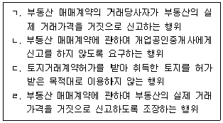
- ㄱ, ㄷ
- ㄱ, ㄹ
- ㄴ, ㄹ
- ㄱ, ㄴ, ㄷ
- ㄴ, ㄷ, ㄹ
(정답률: 0%)
33. 공인중개사법령상 중개사무소의 설치에 관한 설명으로 틀린 것은?
- 법인이 아닌 개업공인중개사는 그 등록관청의 관할구역안에 1개의 중개사무소만 둘 수 있다.
- 다른 법률의 규정에 따라 중개업을 할 수 있는 법인의 분사무소에는 공인중개사를 책임자로 두지 않아도 된다.
- 개업공인중개사가 중개사무소를 공동으로 사용하려면 중개사무소의 개설등록 또는 이전신고를 할 때 그 중개사무소를 사용할 권리가 있는 다른 개업공인중개사의 승낙서를 첨부해야 한다.
- 법인인 개업공인중개사가 분사무소를 두려는 경우 소유ㆍ전세ㆍ임대차 또는 사용대차 등의 방법으로 사용권을 확보해야 한다.
- 법인인 개업공인중개사가 그 등록관청의 관할구역 외의 지역에 둘 수 있는 분사무소는 시ㆍ도별로 1개소를 초과할 수 없다.
(정답률: 28%)
34. 甲이 ｢건축법 시행령｣에 따른 단독주택을 매수하는 계약을 체결하였을 때, 부동산 거래신고 등에 관한 법령에 따라 甲본인이 그 주택에 입주할지 여부를 신고해야 하는 경우를 모두 고른 것은? (甲, 乙, 丙은 자연인이고, 丁은 ｢지방공기업법｣상 지방공단임)
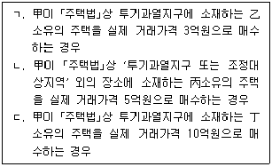
- ㄱ
- ㄴ
- ㄱ, ㄴ
- ㄱ, ㄷ
- ㄴ, ㄷ
(정답률: 18%)
35. 개업공인중개사 甲이 A도 B시 소재의 X주택에 관한 乙과 丙간의 임대차계약 체결을 중개하면서 ｢부동산 거래신고 등에 관한 법률｣에 따른 주택임대차계약의 신고에 관하여 설명한 내용의 일부이다. ( )에 들어 갈 숫자를 바르게 나열한 것은? (X주택은 ｢주택임대차보호법｣의 적용대상이며, 乙과 丙은 자연인임)
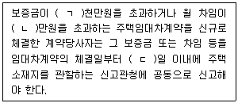
- ㄱ: 3, ㄴ: 30, ㄷ: 60
- ㄱ: 3, ㄴ: 50, ㄷ: 30
- ㄱ: 6, ㄴ: 30, ㄷ: 30
- ㄱ: 6, ㄴ: 30, ㄷ: 60
- ㄱ: 6, ㄴ: 50, ㄷ: 60
(정답률: 24%)
36. 공인중개사법령상 벌칙 부과대상 행위 중 피해자의 명시한 의사에 반하여 벌하지 않는 경우는?
- 거래정보사업자가 개업공인중개사로부터 의뢰받은 내용과 다르게 중개대상물의 정보를 부동산거래정보망에 공개한 경우
- 개업공인중개사가 그 업무상 알게 된 비밀을 누설한 경우
- 개업공인중개사가 중개의뢰인으로부터 법령으로 정한 보수를 초과하여 금품을 받은 경우
- 시세에 부당한 영향을 줄 목적으로 개업공인중개사에게 중개대상물을 시세보다 현저하게 높게 표시ㆍ광고하도록 강요하는 방법으로 개업공인중개사의 업무를 방해한 경우
- 개업공인중개사가 단체를 구성하여 단체 구성원 이외의 자와 공동중개를 제한한 경우
(정답률: 30%)
37. 부동산 거래신고 등에 관한 법령상 외국인등의 부동산 취득에 관한 설명으로 옳은 것을 모두 고른 것은? (단, 법 제7조에 따른 상호주의는 고려하지 않음)
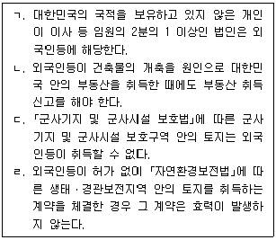
- ㄱ, ㄷ
- ㄱ, ㄹ
- ㄱ, ㄴ, ㄹ
- ㄴ, ㄷ, ㄹ
- ㄱ, ㄴ, ㄷ, ㄹ
(정답률: 23%)
38. 부동산 거래신고 등에 관한 법령상 토지거래계약허가를 받아 취득한 토지를 허가받은 목적대로 이용하고 있지 않은 경우 시장ㆍ군수ㆍ구청장이 취할 수 있는 조치가 아닌 것은?
- 과태료를 부과할 수 있다.
- 토지거래계약허가를 취소할 수 있다.
- 3개월 이내의 기간을 정하여 토지의 이용 의무를 이행하도록 문서로 명할 수 있다.
- 해당 토지에 관한 토지거래계약 허가신청이 있을 때 국가, 지방자치단체, 한국토지주택공사가 그 토지의 매수를 원하면 이들 중에서 매수할 자를 지정하여 협의 매수하게 할 수 있다.
- 해당 토지를 직접 이용하지 않고 임대하고 있다는 이유로 이행명령을 했음에도 정해진 기간에 이행되지 않은 경우, 토지 취득가액의 100분의 7에 상당하는 금액의 이행강제금을 부과한다.
(정답률: 17%)
39. 부동산 거래신고 등에 관한 법령상 토지거래허가에 관한 내용으로 옳은 것은?
- 토지거래허가구역의 지정은 그 지정을 공고한 날부터 3일 후에 효력이 발생한다.
- 토지거래허가구역의 지정 당시 국토교통부장관 또는 시ㆍ도지사가 따로 정하여 공고하지 않은 경우, ｢국토의 계획 및 이용에 관한 법률｣에 따른 도시지역 중 녹지지역 안의 180제곱미터 면적의 토지거래계약에 관하여는 허가가 필요 없다.
- 토지거래계약을 허가받은 자는 대통령령으로 정하는 사유가 있는 경우 외에는 토지 취득일부터 10년간 그 토지를 허가받은 목적대로 이용해야 한다.
- 허가받은 목적대로 토지를 이용하지 않았음을 이유로 이행강제금 부과처분을 받은 자가 시장ㆍ군수ㆍ구청장에게 이의를 제기하려면 그 처분을 고지받은 날부터 60일 이내에 해야 한다.
- 토지거래허가신청에 대해 불허가처분을 받은 자는 그 통지를 받은 날부터 1개월 이내에 시장ㆍ군수ㆍ구청장에게 해당 토지에 관한 권리의 매수를 청구할 수 있다.
(정답률: 24%)
40. 부동산 거래신고 등에 관한 법령상 토지거래허가구역(이하 '허가구역'이라 함)에 관한 설명으로 옳은 것은?
- 시ㆍ도지사는 법령의 개정으로 인해 토지이용에 대한 행위제한이 강화되는 지역을 허가구역으로 지정할 수 있다.
- 토지의 투기적인 거래 성행으로 지가가 급격히 상승하는 등의 특별한 사유가 있으면 5년을 넘는 기간으로 허가구역을 지정할 수 있다.
- 허가구역 지정의 공고에는 허가구역에 대한 축척 5만분의 1 또는 2만5천분의 1의 지형도가 포함되어야 한다.
- 허가구역을 지정한 시ㆍ도지사는 지체 없이 허가구역지정에 관한 공고내용을 관할 등기소의 장에게 통지해야 한다.
- 허가구역 지정에 이의가 있는 자는 그 지정이 공고된 날부터 1개월 내에 시장ㆍ군수ㆍ구청장에게 이의를 신청할 수 있다.
(정답률: 18%)
2과목: 임의구분
41. 국토의 계획 및 이용에 관한 법령상 광역도시계획에 관한 설명으로 틀린 것은?
- 광역도시계획의 수립기준은 국토교통부장관이 정한다.
- 광역계획권이 같은 도의 관할 구역에 속하여 있는 경우 관할 도지사가 광역도시계획을 수립하여야 한다.
- 시ㆍ도지사, 시장 또는 군수는 광역도시계획을 수립하거나 변경하려면 미리 관계 시ㆍ도, 시 또는 군의 의회와 관계 시장 또는 군수의 의견을 들어야 한다.
- 시장 또는 군수가 기초조사정보체계를 구축한 경우에는 등록된 정보의 현황을 5년마다 확인하고 변동사항을 반영하여야 한다.
- 광역계획권을 지정한 날부터 3년이 지날 때까지 관할 시장 또는 군수로부터 광역도시계획의 승인 신청이 없는 경우 관할 도지사가 광역도시계획을 수립하여야 한다.
(정답률: 12%)
42. 국토의 계획 및 이용에 관한 법령상 도시ㆍ군기본계획에 관한 설명으로 틀린 것은?
- ｢수도권정비계획법｣에 의한 수도권에 속하고 광역시와 경계를 같이하지 아니한 시로서 인구 20만명 이하인 시는 도시ㆍ군기본계획을 수립하지 아니할 수 있다.
- 도시ㆍ군기본계획에는 기후변화 대응 및 에너지절약에 관한 사항에 대한 정책 방향이 포함되어야 한다.
- 광역도시계획이 수립되어 있는 지역에 대하여 수립하는 도시ㆍ군기본계획은 그 광역도시계획에 부합되어야 한다.
- 시장 또는 군수는 5년마다 관할 구역의 도시ㆍ군기본계획에 대하여 타당성을 전반적으로 재검토하여 정비하여야 한다.
- 특별시장ㆍ광역시장ㆍ특별자치시장 또는 특별자치도지사는 도시ㆍ군기본계획을 변경하려면 관계 행정기관의장(국토교통부장관을 포함)과 협의한 후 지방도시계획위원회의 심의를 거쳐야 한다.
(정답률: 23%)
43. 국토의 계획 및 이용에 관한 법령상 도시ㆍ군계획시설에 관한 설명으로 틀린 것은? (단, 조례는 고려하지 않음)
- 도시ㆍ군계획시설 부지의 매수의무자인 지방공사는 도시ㆍ군계획시설채권을 발행하여 그 대금을 지급할 수 있다.
- 도시ㆍ군계획시설 부지의 매수의무자는 매수하기로 결정한 토지를 매수 결정을 알린 날부터 2년 이내에 매수하여야 한다.
- 200만제곱미터를 초과하는 ｢도시개발법｣에 따른 도시개발구역에서 개발사업을 시행하는 자는 공동구를 설치하여야 한다.
- 국가계획으로 설치하는 광역시설은 그 광역시설의 설치ㆍ관리를 사업종목으로 하여 다른 법률에 따라 설립된 법인이 설치ㆍ관리할 수 있다.
- 도시ㆍ군계획시설채권의 상환기간은 10년 이내로 한다.
(정답률: 12%)
44. 국토의 계획 및 이용에 관한 법령상 도시ㆍ군관리계획에 관한 설명으로 틀린 것은?
- 국토교통부장관은 국가계획과 관련된 경우 직접 도시ㆍ군관리계획을 입안할 수 있다.
- 주민은 산업ㆍ유통개발진흥지구의 지정에 관한 사항에 대하여 도시ㆍ군관리계획의 입안권자에게 도시ㆍ군관리계획의 입안을 제안할 수 있다.
- 도시ㆍ군관리계획으로 입안하려는 지구단위계획구역이 상업지역에 위치하는 경우에는 재해취약성분석을 하지 아니할 수 있다.
- 도시ㆍ군관리계획 결정의 효력은 지형도면을 고시한 다음 날부터 발생한다.
- 인접한 특별시ㆍ광역시ㆍ특별자치시ㆍ특별자치도ㆍ시 또는 군의 관할 구역에 대한 도시ㆍ군관리계획은 관계특별시장ㆍ광역시장ㆍ특별자치시장ㆍ특별자치도지사ㆍ시장 또는 군수가 협의하여 공동으로 입안하거나 입안할 자를 정한다.
(정답률: 17%)
45. 국토의 계획 및 이용에 관한 법령상 지구단위계획구역과 지구단위계획에 관한 설명으로 틀린 것은? (단, 조례는 고려하지 않음)
- 지구단위계획이 수립되어 있는 지구단위계획구역에서 공사기간 중 이용하는 공사용 가설건축물을 건축하려면 그 지구단위계획에 맞게 하여야 한다.
- 지구단위계획은 해당 용도지역의 특성을 고려하여 수립한다.
- 시장 또는 군수가 입안한 지구단위계획구역의 지정ㆍ변경에 관한 도시ㆍ군관리계획은 시장 또는 군수가 직접 결정한다.
- 지구단위계획구역 및 지구단위계획은 도시ㆍ군관리계획으로 결정한다.
- ｢관광진흥법｣에 따라 지정된 관광단지의 전부 또는 일부에 대하여 지구단위계획구역을 지정할 수 있다.
(정답률: 30%)
46. 국토의 계획 및 이용에 관한 법령상 개발행위에 따른 공공시설 등의 귀속에 관한 설명으로 틀린 것은?
- 개발행위허가를 받은 행정청이 기존의 공공시설에 대체되는 공공시설을 설치한 경우에는 새로 설치된 공공시설은 그 시설을 관리할 관리청에 무상으로 귀속된다.
- 개발행위허가를 받은 행정청은 개발행위가 끝나 준공검사를 마친 때에는 해당 시설의 관리청에 공공시설의 종류와 토지의 세목을 통지하여야 한다.
- 개발행위허가를 받은 자가 행정청이 아닌 경우 개발행위허가를 받은 자가 새로 설치한 공공시설은 그 시설을 관리할 관리청에 무상으로 귀속된다.
- 개발행위허가를 받은 행정청이 기존의 공공시설에 대체되는 공공시설을 설치한 경우에는 종래의 공공시설은 그 행정청에게 무상으로 귀속된다.
- 개발행위허가를 받은 자가 행정청이 아닌 경우 개발행위로 용도가 폐지되는 공공시설은 개발행위허가를 받은 자에게 무상으로 귀속된다.
(정답률: 17%)
47. 국토의 계획 및 이용에 관한 법령상 개발행위에 따른 기반시설의 설치에 관한 설명으로 옳은 것은? (단, 조례는 고려하지 않음)
- 시장 또는 군수가 개발밀도관리구역을 변경하는 경우 관할 지방도시계획위원회의 심의를 거치지 않아도 된다.
- 기반시설부담구역의 지정고시일부터 2년이 되는 날까지 기반시설설치계획을 수립하지 아니하면 그 2년이 되는 날에 기반시설부담구역의 지정은 해제된 것으로 본다.
- 시장 또는 군수는 기반시설설치비용 납부의무자가 지방자치단체로부터 건축허가를 받은 날부터 3개월 이내에 기반시설설치비용을 부과하여야 한다.
- 시장 또는 군수는 개발밀도관리구역에서는 해당 용도지역에 적용되는 용적률의 최대한도의 50퍼센트 범위에서 용적률을 강화하여 적용한다.
- 기반시설설치비용 납부의무자는 사용승인 신청 후 7일까지 그 비용을 내야 한다.
(정답률: 18%)
48. 국토의 계획 및 이용에 관한 법령상 성장관리계획구역을 지정할 수 있는 지역이 아닌 것은?
- 녹지지역
- 관리지역
- 주거지역
- 자연환경보전지역
- 농림지역
(정답률: 24%)
49. 국토의 계획 및 이용에 관한 법령상 시가화조정구역에 관한 설명으로 옳은 것은?
- 시가화조정구역은 도시지역과 그 주변지역의 무질서한 시가화를 방지하고 계획적ㆍ단계적인 개발을 도모하기 위하여 시ㆍ도지사가 도시ㆍ군기본계획으로 결정하여 지정하는 용도구역이다.
- 시가화유보기간은 5년 이상 20년 이내의 기간이다.
- 시가화유보기간이 끝나면 국토교통부장관 또는 시ㆍ도지사는 이를 고시하여야 하고, 시가화조정구역 지정 결정은 그 고시일 다음 날부터 그 효력을 잃는다.
- 공익상 그 구역안에서의 사업시행이 불가피한 것으로서 주민의 요청에 의하여 시ㆍ도지사가 시가화조정구역의 지정목적달성에 지장이 없다고 인정한 도시ㆍ군계획사업은 시가화조정구역에서 시행할 수 있다.
- 시가화조정구역에서 입목의 벌채, 조림, 육림 행위는 허가없이 할 수 있다.
(정답률: 34%)
50. 국토의 계획 및 이용에 관한 법령상 도시ㆍ군계획시설사업에 관한 설명으로 틀린 것은?
- 도시ㆍ군계획시설은 기반시설 중 도시ㆍ군관리계획으로 결정된 시설이다.
- 도시ㆍ군계획시설사업이 같은 도의 관할 구역에 속하는 둘 이상의 시 또는 군에 걸쳐 시행되는 경우에는 국토교통부장관이 시행자를 정한다.
- 한국토지주택공사는 도시ㆍ군계획시설사업 대상 토지소유자 동의 요건을 갖추지 않아도 도시ㆍ군계획시설사업의 시행자로 지정을 받을 수 있다.
- 도시ㆍ군계획시설사업 실시계획에는 사업의 착수예정일 및 준공예정일도 포함되어야 한다.
- 도시ㆍ군계획시설사업 실시계획 인가 내용과 다르게 도시ㆍ군계획시설사업을 하여 토지의 원상회복 명령을 받은 자가 원상회복을 하지 아니하면 ｢행정대집행법｣에 따른 행정대집행에 따라 원상회복을 할 수 있다.
(정답률: 28%)
51. 국토의 계획 및 이용에 관한 법령상 기반시설의 종류와 그 해당 시설의 연결이 틀린 것은?
- 교통시설 - 차량 검사 및 면허시설
- 공간시설 - 녹지
- 유통ㆍ공급시설 - 방송ㆍ통신시설
- 공공ㆍ문화체육시설 - 학교
- 보건위생시설 - 폐기물처리 및 재활용시설
(정답률: 36%)
52. 국토의 계획 및 이용에 관한 법령상 용도지역별 용적률의 최대한도가 큰 순서대로 나열한 것은? (단, 조례 기타 강화ㆍ완화조건은 고려하지 않음)
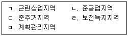
- ㄱ - ㄴ - ㄷ - ㄹ – ㅁ
- ㄱ - ㄷ - ㄴ - ㅁ – ㄹ
- ㄴ - ㅁ - ㄱ - ㄹ – ㄷ
- ㄷ - ㄱ - ㄹ - ㄴ – ㅁ
- ㄷ - ㄴ - ㄱ - ㅁ - ㄹ
(정답률: 28%)
53. 도시개발법령상 도시개발구역을 지정할 수 있는 자를 모두 고른 것은?
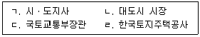
- ㄱ
- ㄴ, ㄹ
- ㄷ, ㄹ
- ㄱ, ㄴ, ㄷ
- ㄱ, ㄴ, ㄷ, ㄹ
(정답률: 24%)
54. 도시개발법령상 토지등의 수용 또는 사용의 방식에 따른 사업 시행에 관한 설명으로 옳은 것은?
- 도시개발사업을 시행하는 지방자치단체는 도시개발구역지정 이후 그 시행방식을 혼용방식에서 수용 또는 사용방식으로 변경할 수 있다.
- 도시개발사업을 시행하는 정부출연기관이 그 사업에 필요한 토지를 수용하려면 사업대상 토지면적의 3분의 2이상에 해당하는 토지를 소유하고 토지 소유자 총수의 2분의 1 이상에 해당하는 자의 동의를 받아야 한다.
- 도시개발사업을 시행하는 공공기관은 토지상환채권을 발행할 수 없다.
- 원형지를 공급받아 개발하는 지방공사는 원형지에 대한 공사완료 공고일부터 5년이 지난 시점이라면 해당 원형지를 매각할 수 있다.
- 원형지가 공공택지 용도인 경우 원형지개발자의 선정은 추첨의 방법으로 할 수 있다.
(정답률: 12%)
55. 도시개발법령상 환지 방식에 의한 사업 시행에 관한 설명으로 틀린 것은?
- 도시개발사업을 입체 환지 방식으로 시행하는 경우에는 환지 계획에 건축 계획이 포함되어야 한다.
- 시행자는 토지면적의 규모를 조정할 특별한 필요가 있으면 면적이 넓은 토지는 그 면적을 줄여서 환지를 정하거나 환지 대상에서 제외할 수 있다.
- 도시개발구역 지정권자가 정한 기준일의 다음 날부터 단독주택이 다세대주택으로 전환되는 경우 시행자는 해당 건축물에 대하여 금전으로 청산하거나 환지 지정을 제한할 수 있다.
- 시행자는 환지 예정지를 지정한 경우에 해당 토지를 사용하거나 수익하는 데에 장애가 될 물건이 그 토지에 있으면 그 토지의 사용 또는 수익을 시작할 날을 따로 정할 수 있다.
- 시행자는 환지를 정하지 아니하기로 결정된 토지 소유자나 임차권자등에게 날짜를 정하여 그날부터 해당 토지 또는 해당 부분의 사용 또는 수익을 정지시킬 수 있다.
(정답률: 18%)
56. 도시개발법령상 도시개발채권에 관한 설명으로 옳은 것은?
- ｢국토의 계획 및 이용에 관한 법률｣에 따른 공작물의 설치허가를 받은 자는 도시개발채권을 매입하여야 한다.
- 도시개발채권의 이율은 기획재정부장관이 국채ㆍ공채 등의 금리와 특별회계의 상황 등을 고려하여 정한다.
- 도시개발채권을 발행하려는 시ㆍ도지사는 기획재정부장관의 승인을 받은 후 채권의 발행총액 등을 공고하여야 한다.
- 도시개발채권의 상환기간은 5년보다 짧게 정할 수는 없다.
- 도시개발사업을 공공기관이 시행하는 경우 해당 공공기관의 장은 시ㆍ도지사의 승인을 받아 도시개발채권을 발행할 수 있다.
(정답률: 12%)
57. 도시개발법령상 도시개발구역에서 허가를 받아야 할 행위로 명시되지 않은 것은?
- 토지의 합병
- 토석의 채취
- 죽목의 식재
- 공유수면의 매립
- ｢건축법｣에 따른 건축물의 용도 변경
(정답률: 17%)
58. 도시개발법령상 도시개발구역 지정권자가 속한 기관에 종사하는 자로부터 제공받은 미공개정보를 지정목적 외로 사용하여 1억 5천만원 상당의 재산상 이익을 얻은 자에게 벌금을 부과하는 경우 그 상한액은?
- 1억 5천만원
- 4억 5천만원
- 5억원
- 7억 5천만원
- 10억원
(정답률: 12%)
59. 도시 및 주거환경정비법령상 다음의 정의에 해당하는 정비사업은?
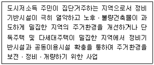
- 주거환경개선사업
- 재건축사업
- 공공재건축사업
- 재개발사업
- 공공재개발사업
(정답률: 30%)
60. 도시 및 주거환경정비법령상 조합총회의 의결사항 중대의원회가 대행할 수 없는 사항을 모두 고른 것은?
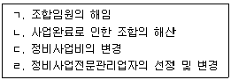
- ㄱ, ㄴ, ㄷ
- ㄱ, ㄴ, ㄹ
- ㄱ, ㄷ, ㄹ
- ㄴ, ㄷ, ㄹ
- ㄱ, ㄴ, ㄷ, ㄹ
(정답률: 36%)
61. 도시 및 주거환경정비법령상 공공재개발사업에 관한 설명이다. ( )에 들어갈 내용과 숫자를 바르게 나열한 것은?
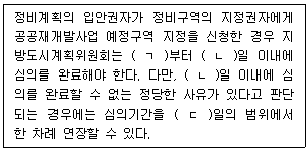
- ㄱ: 신청일, ㄴ: 20, ㄷ: 20
- ㄱ: 신청일, ㄴ: 30, ㄷ: 20
- ㄱ: 신청일, ㄴ: 30, ㄷ: 30
- ㄱ: 신청일 다음 날, ㄴ: 20, ㄷ: 20
- ㄱ: 신청일 다음 날, ㄴ: 30, ㄷ: 30
(정답률: 30%)
62. 도시 및 주거환경정비법령상 관리처분계획 등에 관한 설명으로 옳은 것은? (단, 조례는 고려하지 않음)
- 지분형주택의 규모는 주거전용면적 60제곱미터 이하인 주택으로 한정한다.
- 분양신청기간의 연장은 30일의 범위에서 한 차례만 할 수 있다.
- 같은 세대에 속하지 아니하는 3명이 1토지를 공유한 경우에는 3주택을 공급하여야 한다.
- 조합원 10분의 1 이상이 관리처분계획인가 신청이 있은 날부터 30일 이내에 관리처분계획의 타당성 검증을 요청한 경우 시장ㆍ군수는 이에 따라야 한다.
- 시장ㆍ군수는 정비구역에서 면적이 100제곱미터의 토지를 소유한 자로서 건축물을 소유하지 아니한 자의 요청이 있는 경우에는 인수한 임대주택의 일부를 ｢주택법｣에 따른 토지임대부 분양주택으로 전환하여 공급하여야 한다.
(정답률: 12%)
63. 도시 및 주거환경정비법령상 정비사업의 시행에 관한 설명으로 옳은 것은?
- 세입자의 세대수가 토지등소유자의 3분의 1에 해당하는 경우 시장ㆍ군수등은 토지주택공사등을 주거환경개선사업 시행자로 지정하기 위해서는 세입자의 동의를 받아야 한다.
- 재개발사업은 토지등소유자가 30인인 경우에는 토지등 소유자가 직접 시행할 수 있다.
- 재건축사업 조합설립추진위원회가 구성승인을 받은 날부터 2년이 되었음에도 조합설립인가를 신청하지 아니한 경우 시장ㆍ군수등이 직접 시행할 수 있다.
- 조합설립추진위원회는 토지등소유자의 수가 200인인 경우 5명 이상의 이사를 두어야 한다.
- 주민대표회의는 토지등소유자의 과반수의 동의를 받아 구성하며, 위원장과 부위원장 각 1명과 1명 이상 3명 이하의 감사를 둔다.
(정답률: 12%)
64. 도시 및 주거환경정비법령상 청산금 및 비용부담 등에 관한 설명으로 옳은 것은?
- 청산금을 징수할 권리는 소유권 이전고시일부터 3년간 행사하지 아니하면 소멸한다.
- 정비구역의 국유ㆍ공유재산은 정비사업 외의 목적으로 매각되거나 양도될 수 없다.
- 청산금을 지급받을 자가 받기를 거부하더라도 사업시행자는 그 청산금을 공탁할 수는 없다.
- 시장ㆍ군수등이 아닌 사업시행자는 부과금을 체납하는 자가 있는 때에는 지방세 체납처분의 예에 따라 부과ㆍ징수할 수 있다.
- 국가 또는 지방자치단체는 토지임대부 분양주택을 공급받는 자에게 해당 공급비용의 전부를 융자할 수는 없다.
(정답률: 24%)
65. 주택법령상 한국토지주택공사가 우선 매입하는 분양가상한제 적용주택의 매입금액에 관한 설명이다. ( )에 들어갈 숫자를 바르게 나열한 것은?
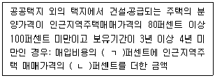
- ㄱ: 25, ㄴ: 50
- ㄱ: 25, ㄴ: 75
- ㄱ: 50, ㄴ: 50
- ㄱ: 50, ㄴ: 75
- ㄱ: 75, ㄴ: 25
(정답률: 12%)
66. 주택법령상 주택단지가 일정한 시설로 분리된 토지는 각각 별개의 주택단지로 본다. 그 시설에 해당하지 않는 것은?
- 철도
- 폭 20 미터의 고속도로
- 폭 10 미터의 일반도로
- 폭 20 미터의 자동차전용도로
- 폭 10 미터의 도시계획예정도로
(정답률: 28%)
67. 주택법령상 용어에 관한 설명으로 옳은 것을 모두 고른 것은?
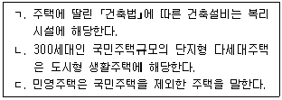
- ㄱ
- ㄷ
- ㄱ, ㄴ
- ㄴ, ㄷ
- ㄱ, ㄴ, ㄷ
(정답률: 18%)
68. 주택법령상 투기과열지구의 지정 기준에 관한 설명이다. ( )에 들어갈 숫자와 내용을 바르게 나열한 것은?
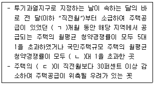
- ㄱ: 2, ㄴ: 10, ㄷ: 분양계획
- ㄱ: 2, ㄴ: 10, ㄷ: 건축허가실적
- ㄱ: 2, ㄴ: 20, ㄷ: 건축허가실적
- ㄱ: 3, ㄴ: 10, ㄷ: 분양계획
- ㄱ: 3, ㄴ: 20, ㄷ: 건축허가실적
(정답률: 18%)
69. 주택법령상 사업계획승인 등에 관한 설명으로 틀린 것은? (단, 다른 법률에 따른 사업은 제외함)
- 주택건설사업을 시행하려는 자는 전체 세대수가 600세대 이상의 주택단지를 공구별로 분할하여 주택을 건설ㆍ공급할 수 있다.
- 사업계획승인권자는 착공신고를 받은 날부터 20일 이내에 신고수리 여부를 신고인에게 통지하여야 한다.
- 사업계획승인권자는 사업계획승인의 신청을 받았을 때에는 정당한 사유가 없으면 신청받은 날부터 60일 이내에 사업주체에게 승인 여부를 통보하여야 한다.
- 사업주체는 사업계획승인을 받은 날부터 1년 이내에 공사를 착수하여야 한다.
- 사업계획에는 부대시설 및 복리시설의 설치에 관한 계획 등이 포함되어야 한다.
(정답률: 24%)
70. 주택법령상 주택상환사채의 납입금이 사용될 수 있는 용도로 명시된 것을 모두 고른 것은?
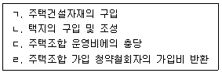
- ㄱ, ㄴ
- ㄱ, ㄹ
- ㄷ, ㄹ
- ㄱ, ㄴ, ㄷ
- ㄴ, ㄷ, ㄹ
(정답률: 30%)
71. 주택법령상 주택공급과 관련하여 금지되는 공급질서 교란행위에 해당하는 것을 모두 고른 것은?
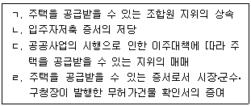
- ㄱ, ㄴ
- ㄱ, ㄹ
- ㄷ, ㄹ
- ㄱ, ㄴ, ㄷ
- ㄴ, ㄷ, ㄹ
(정답률: 30%)
72. 건축법령상 특수구조 건축물의 특례에 관한 설명으로 옳은 것은? (단, 건축법령상 다른 특례 및 조례는 고려하지 않음)
- 건축 공사현장 안전관리 예치금에 관한 규정을 강화하여 적용할 수 있다.
- 대지의 조경에 관한 규정을 변경하여 적용할 수 있다.
- 한쪽 끝은 고정되고 다른 끝은 지지되지 아니한 구조로 된 차양이 외벽(외벽이 없는 경우에는 외곽 기둥을 말함)의 중심선으로부터 3미터 이상 돌출된 건축물은 특수구조 건축물에 해당한다.
- 기둥과 기둥 사이의 거리(기둥의 중심선 사이의 거리를 말함)가 15미터인 건축물은 특수구조 건축물로서 건축물 내진등급의 설정에 관한 규정을 강화하여 적용할 수 있다.
- 특수구조 건축물을 건축하려는 건축주는 건축허가 신청전에 허가권자에게 해당 건축물의 구조 안전에 관하여 지방건축위원회의 심의를 신청하여야 한다.
(정답률: 30%)
73. 건축주 甲은 수면 위에 건축물을 건축하고자 한다. 건축법령상 그 건축물의 대지의 범위를 설정하기 곤란한 경우 甲이 허가권자에게 완화 적용을 요청할 수 없는 기준은? (단, 다른 조건과 조례는 고려하지 않음)
- 대지의 조경
- 공개 공지 등의 확보
- 건축물의 높이 제한
- 대지의 안전
- 건축물 내진등급의 설정
(정답률: 17%)
74. 건축법령상 건축허가 제한에 관한 설명으로 옳은 것은?
- 국방, 문화재보존 또는 국민경제를 위하여 특히 필요한 경우 주무부장관은 허가권자의 건축허가를 제한할 수 있다.
- 지역계획을 위하여 특히 필요한 경우 도지사는 특별자치시장의 건축허가를 제한할 수 있다.
- 건축허가를 제한하는 경우 건축허가 제한기간은 2년 이내로 하며, 1회에 한하여 1년 이내의 범위에서 제한기간을 연장할 수 있다.
- 시ㆍ도지사가 건축허가를 제한하는 경우에는 ｢토지이용규제 기본법｣에 따라 주민의견을 청취하거나 건축위원회의 심의를 거쳐야 한다.
- 국토교통부장관은 건축허가를 제한하는 경우 제한 목적ㆍ기간, 대상 건축물의 용도와 대상 구역의 위치ㆍ면적ㆍ경계를 지체 없이 공고하여야 한다.
(정답률: 30%)
75. 건축주 甲은 A도 B시에서 연면적이 100제곱미터이고 2층인 건축물을 대수선하고자 ｢건축법｣제14조에 따른 신고(이하 “건축신고”)를 하려고 한다. 건축법령상 이에 관한 설명으로 옳은 것은? (단, 건축법령상 특례 및 조례는 고려하지 않음)
- 甲이 대수선을 하기 전에 B시장에게 건축신고를 하면 건축허가를 받은 것으로 본다.
- 건축신고를 한 甲이 공사시공자를 변경하려면 B시장에게 허가를 받아야 한다.
- B시장은 건축신고의 수리 전에 건축물 안전영향평가를 실시하여야 한다.
- 건축신고를 한 甲이 신고일부터 6개월 이내에 공사에 착수하지 아니하면 그 신고의 효력은 없어진다.
- 건축신고를 한 甲은 건축물의 공사가 끝난 후 사용승인신청 없이 건축물을 사용할 수 있다.
(정답률: 30%)
76. 건축법령상 건축물대장에 건축물과 그 대지의 현황 및 건축물의 구조내력에 관한 정보를 적어서 보관하고 이를 지속적으로 정비하여야 하는 경우를 모두 고른 것은? (단, 가설건축물은 제외함)
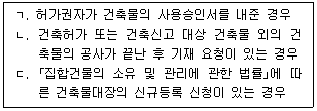
- ㄱ
- ㄴ
- ㄱ, ㄷ
- ㄴ, ㄷ
- ㄱ, ㄴ, ㄷ
(정답률: 18%)
77. 건축법령상 특별건축구역에 관한 설명으로 옳은 것은?
- 국토교통부장관은 지방자치단체가 국제행사 등을 개최하는 지역의 사업구역을 특별건축구역으로 지정할 수 있다.
- ｢도로법｣에 따른 접도구역은 특별건축구역으로 지정될 수 없다.
- 특별건축구역에서의 건축기준의 특례사항은 지방자치단체가 건축하는 건축물에는 적용되지 않는다.
- 특별건축구역에서 ｢주차장법｣에 따른 부설주차장의 설치에 관한 규정은 개별 건축물마다 적용하여야 한다.
- 특별건축구역을 지정한 경우에는 ｢국토의 계획 및 이용에 관한 법률｣에 따른 용도지역ㆍ지구ㆍ구역의 지정이 있는 것으로 본다.
(정답률: 12%)
78. 건축법령상 건축등과 관련된 분쟁으로서 건축분쟁전문위원회의 조정 및 재정의 대상이 되는 것은? (단, ｢건설산업기본법｣제69조에 따른 조정의 대상이 되는 분쟁은 고려하지 않음)
- '건축주'와 '건축신고수리자' 간의 분쟁
- '공사시공자'와 '건축지도원' 간의 분쟁
- '건축허가권자'와 '공사감리자' 간의 분쟁
- '관계전문기술자'와 '해당 건축물의 건축등으로 피해를 입은 인근주민' 간의 분쟁
- '건축허가권자'와 '해당 건축물의 건축등으로 피해를 입은 인근주민' 간의 분쟁
(정답률: 30%)
79. 농지법령상 농지취득자격증명을 발급받지 아니하고 농지를 취득할 수 있는 경우가 아닌 것은?
- 시효의 완성으로 농지를 취득하는 경우
- 공유 농지의 분할로 농지를 취득하는 경우
- 농업법인의 합병으로 농지를 취득하는 경우
- 국가나 지방자치단체가 농지를 소유하는 경우
- 주말ㆍ체험영농을 하려고 농업진흥지역 외의 농지를 소유하는 경우
(정답률: 18%)
80. 농지법령상 유휴농지에 대한 대리경작자의 지정에 관한 설명으로 옳은 것은?
- 지력의 증진이나 토양의 개량ㆍ보전을 위하여 필요한 기간 동안 휴경하는 농지에 대하여도 대리경작자를 지정할 수 있다.
- 대리경작자 지정은 유휴농지를 경작하려는 농업인 또는 농업법인의 신청이 있을 때에만 할 수 있고, 직권으로는 할 수 없다.
- 대리경작자가 경작을 게을리하는 경우에는 대리경작 기간이 끝나기 전이라도 대리경작자 지정을 해지할 수 있다.
- 대리경작 기간은 3년이고, 이와 다른 기간을 따로 정할 수 없다.
- 농지 소유권자를 대신할 대리경작자만 지정할 수 있고, 농지 임차권자를 대신할 대리경작자를 지정할 수는 없다.
(정답률: 42%)
3과목: 임의구분
81. 공간정보의 구축 및 관리 등에 관한 법령상 지상경계의 결정기준으로 옳은 것은? (단, 지상경계의 구획을 형성하는 구조물 등의 소유자가 다른 경우는 제외함)
- 연접되는 토지 간에 높낮이 차이가 있는 경우: 그 구조물 등의 하단부
- 공유수면매립지의 토지 중 제방 등을 토지에 편입하여 등록하는 경우: 그 경사면의 하단부
- 도로ㆍ구거 등의 토지에 절토(땅깎기)된 부분이 있는 경우: 바깥쪽 어깨부분
- 토지가 해면 또는 수면에 접하는 경우: 최소만조위 또는 최소만수위가 되는 선
- 연접되는 토지 간에 높낮이 차이가 없는 경우: 그 구조물 등의 상단부
(정답률: 12%)
82. 공간정보의 구축 및 관리 등에 관한 법령상 지상건축물 등의 현황을 지적도 및 임야도에 등록된 경계와 대비하여 표시하는 지적측량은?
- 등록전환측량
- 신규등록측량
- 지적현황측량
- 경계복원측량
- 토지분할측량
(정답률: 36%)
83. 공간정보의 구축 및 관리 등에 관한 법령상 임야도의 축척에 해당하는 것을 모두 고른 것은?
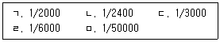
- ㄱ, ㄷ
- ㄷ, ㄹ
- ㄱ, ㄴ, ㅁ
- ㄴ, ㄷ, ㄹ
- ㄴ, ㄷ, ㄹ, ㅁ
(정답률: 30%)
84. 공간정보의 구축 및 관리 등에 관한 법령상 지목의 구분에 관한 설명으로 틀린 것은?
- 바닷물을 끌어들여 소금을 채취하기 위하여 조성된 토지와 이에 접속된 제염장(製鹽場) 등 부속시설물의 부지는 “염전”으로 한다. 다만, 천일제염 방식으로 하지 아니하고 동력으로 바닷물을 끌어들여 소금을 제조하는 공장시설물의 부지는 제외한다.
- 저유소(貯油所) 및 원유저장소의 부지와 이에 접속된 부속시설물의 부지는 “주유소용지”로 한다. 다만, 자동차ㆍ선박ㆍ기차 등의 제작 또는 정비공장 안에 설치된 급유ㆍ송유시설 등의 부지는 제외한다.
- 물이 고이거나 상시적으로 물을 저장하고 있는 댐ㆍ저수지ㆍ소류지(沼溜地)ㆍ호수ㆍ연못 등의 토지와 물을 상시적으로 직접 이용하여 연(蓮)ㆍ왕골 등의 식물을 주로 재배하는 토지는 “유지”로 한다.
- 일반 공중의 보건ㆍ휴양 및 정서생활에 이용하기 위한 시설을 갖춘 토지로서 ｢국토의 계획 및 이용에 관한 법률｣에 따라 공원 또는 녹지로 결정ㆍ고시된 토지는 “공원”으로 한다.
- 용수(用水) 또는 배수(排水)를 위하여 일정한 형태를 갖춘 인공적인 수로ㆍ둑 및 그 부속시설물의 부지와 자연의 유수(流水)가 있거나 있을 것으로 예상되는 소규모 수로부지는 “구거”로 한다.
(정답률: 24%)
85. 공간정보의 구축 및 관리 등에 관한 법령상 지적도 및 임야도의 등록사항을 모두 고른 것은?
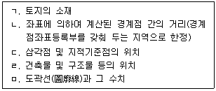
- ㄱ, ㄷ, ㄹ
- ㄴ, ㄷ, ㅁ
- ㄴ, ㄹ, ㅁ
- ㄱ, ㄴ, ㄷ, ㅁ
- ㄱ, ㄴ, ㄷ, ㄹ, ㅁ
(정답률: 6%)
86. 공간정보의 구축 및 관리 등에 관한 법령상 지적측량의 적부심사 등에 관한 설명으로 옳은 것은?
- 지적측량 적부심사청구를 받은 지적소관청은 30일 이내에 다툼이 되는 지적측량의 경위 및 그 성과, 해당 토지에 대한 토지이동 및 소유권 변동 연혁, 해당 토지 주변의 측량기준점, 경계, 주요 구조물 등 현황 실측도를 조사하여 지방지적위원회에 회부하여야 한다.
- 지적측량 적부심사청구를 회부받은 지방지적위원회는 부득이한 경우가 아닌 경우 그 심사청구를 회부받은 날부터 90일 이내에 심의ㆍ의결하여야 한다.
- 지방지적위원회는 부득이한 경우에 심의기간을 해당 지적위원회의 의결을 거쳐 60일 이내에서 한 번만 연장할 수 있다.
- 시ㆍ도지사는 지방지적위원회의 지적측량 적부심사 의결서를 받은 날부터 7일 이내에 지적측량 적부심사 청구인 및 이해관계인에게 그 의결서를 통지하여야 한다.
- 의결서를 받은 자가 지방지적위원회의 의결에 불복하는 경우에는 그 의결서를 받은 날부터 90일 이내에 시ㆍ도지사를 거쳐 중앙지적위원회에 재심사를 청구할 수 있다.
(정답률: 12%)
87. 공간정보의 구축 및 관리 등에 관한 법령상 토지의 이동이 있을 때 토지소유자의 신청이 없어 지적소관청이 토지의 이동현황을 직권으로 조사ㆍ측량하여 토지의 지번ㆍ지목ㆍ면적ㆍ경계 또는 좌표를 결정하기 위해 수립하는 계획은?
- 토지이동현황 조사계획
- 토지조사계획
- 토지등록계획
- 토지조사ㆍ측량계획
- 토지조사ㆍ등록계획
(정답률: 23%)
88. 공간정보의 구축 및 관리 등에 관한 법령상 공유지연명부와 대지권등록부의 공통 등록사항을 모두 고른 것은?
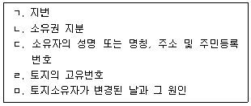
- ㄱ, ㄴ, ㄷ
- ㄱ, ㄴ, ㄹ, ㅁ
- ㄱ, ㄷ, ㄹ, ㅁ
- ㄴ, ㄷ, ㄹ, ㅁ
- ㄱ, ㄴ, ㄷ, ㄹ, ㅁ
(정답률: 24%)
89. 공간정보의 구축 및 관리 등에 관한 법령상 토지소유자 등 이해관계인이 지적측량수행자에게 지적측량을 의뢰하여야 하는 경우가 아닌 것을 모두 고른 것은? (단, 지적측량을 할 필요가 있는 경우임)
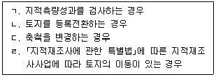
- ㄱ, ㄴ
- ㄱ, ㄹ
- ㄷ, ㄹ
- ㄱ, ㄴ, ㄷ
- ㄴ, ㄷ, ㄹ
(정답률: 6%)
90. 공간정보의 구축 및 관리 등에 관한 법령상 축척변경위원회의 구성에 관한 내용이다. ( )에 들어갈 사항으로 옳은 것은?
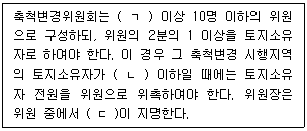
- ㄱ: 3명, ㄴ: 3명, ㄷ: 지적소관청
- ㄱ: 5명, ㄴ: 5명, ㄷ: 지적소관청
- ㄱ: 5명, ㄴ: 5명, ㄷ: 국토교통부장관
- ㄱ: 7명, ㄴ: 7명, ㄷ: 지적소관청
- ㄱ: 7명, ㄴ: 7명, ㄷ: 국토교통부장관
(정답률: 18%)
91. 공간정보의 구축 및 관리 등에 관한 법령상 부동산 종합공부에 관한 설명으로 틀린 것은?
- 지적소관청은 ｢건축법｣제38조에 따른 건축물대장의 내용에서 건축물의 표시와 소유자에 관한 사항(토지에 건축물이 있는 경우만 해당)을 부동산종합공부에 등록하여야 한다.
- 지적소관청은 ｢부동산등기법｣제48조에 따른 부동산의 권리에 관한 사항을 부동산종합공부에 등록하여야 한다.
- 지적소관청은 부동산의 효율적 이용과 부동산과 관련된 정보의 종합적 관리ㆍ운영을 위하여 부동산종합공부를 관리ㆍ운영한다.
- 지적소관청은 부동산종합공부를 영구히 보존하여야 하며, 부동산종합공부의 멸실 또는 훼손에 대비하여 이를 별도로 복제하여 관리하는 정보관리체계를 구축하여야 한다.
- 부동산종합공부를 열람하려는 자는 지적소관청이나 읍ㆍ면ㆍ동의 장에게 신청할 수 있으며, 부동산종합공부기록사항의 전부 또는 일부에 관한 증명서를 발급받으려는 자는 시ㆍ도지사에게 신청하여야 한다.
(정답률: 18%)
92. 공간정보의 구축 및 관리 등에 관한 법령상 지적공부의 보존 등에 관한 설명으로 옳은 것을 모두 고른 것은?
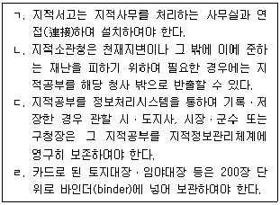
- ㄱ, ㄷ
- ㄴ, ㄹ
- ㄷ, ㄹ
- ㄱ, ㄴ, ㄷ
- ㄱ, ㄴ, ㄹ
(정답률: 18%)
93. 관공서의 촉탁등기에 관한 설명으로 틀린 것은?
- 관공서가 경매로 인하여 소유권이전등기를 촉탁하는 경우, 등기기록과 대장상의 부동산의 표시가 부합하지 않은 때에는 그 등기촉탁을 수리할 수 없다.
- 관공서가 등기를 촉탁하는 경우 우편에 의한 등기촉탁도 할 수 있다.
- 등기의무자인 관공서가 등기권리자의 청구에 의하여 등기를 촉탁하는 경우, 등기의무자의 권리에 관한 등기필 정보를 제공할 필요가 없다.
- 등기권리자인 관공서가 부동산 거래의 주체로서 등기를 촉탁할 수 있는 경우라도 등기의무자와 공동으로 등기를 신청할 수 있다.
- 촉탁에 따른 등기절차는 법률에 다른 규정이 없는 경우에는 신청에 따른 등기에 관한 규정을 준용한다.
(정답률: 6%)
94. 단독으로 등기신청할 수 있는 것을 모두 고른 것은? (단, 판결 등 집행권원에 의한 신청은 제외함)
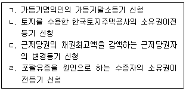
- ㄱ
- ㄱ, ㄴ
- ㄴ, ㄷ
- ㄱ, ㄷ, ㄹ
- ㄴ, ㄷ, ㄹ
(정답률: 6%)
95. 부동산등기법상 등기의 당사자능력에 관한 설명으로 틀린 것은?
- 법인 아닌 사단(社團)은 그 사단 명의로 대표자가 등기를 신청할 수 있다.
- 시설물로서의 학교는 학교 명의로 등기할 수 없다.
- 행정조직인 읍, 면은 등기의 당사자능력이 없다.
- 민법상 조합을 채무자로 표시하여 조합재산에 근저당권설정등기를 할 수 있다.
- 외국인은 법령이나 조약의 제한이 없는 한 자기 명의로 등기신청을 하고 등기명의인이 될 수 있다.
(정답률: 18%)
96. 2021년에 사인(私人)간 토지소유권이전등기 신청시, 등기원인을 증명하는 서면에 검인을 받아야 하는 경우를 모두 고른 것은?
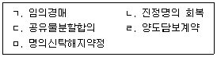
- ㄱ, ㄴ
- ㄱ, ㄷ
- ㄴ, ㄹ
- ㄷ, ㅁ
- ㄷ, ㄹ, ㅁ
(정답률: 18%)
97. 소유권에 관한 등기의 설명으로 옳은 것을 모두 고른 것은?
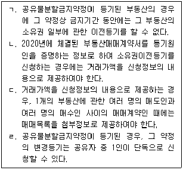
- ㄱ, ㄴ
- ㄱ, ㄷ
- ㄴ, ㄷ
- ㄴ, ㄹ
- ㄷ, ㄹ
(정답률: 12%)
98. 甲은 乙과 乙소유 A건물 전부에 대해 전세금 5억원, 기간 2년으로 하는 전세권설정계약을 체결하고 공동으로 전세권설정등기를 신청하였다. 이에 관한 설명으로 틀린 것은?
- 등기관은 전세금을 기록하여야 한다.
- 등기관은 존속기간을 기록하여야 한다.
- 전세권설정등기가 된 후, 전세금반환채권의 일부 양도를 원인으로 한 전세권 일부이전등기를 할 때에 등기관은 양도액을 기록한다.
- 전세권설정등기가 된 후에 건물전세권의 존속기간이 만료되어 법정갱신이 된 경우, 甲은 존속기간 연장을 위한 변경등기를 하지 않아도 그 전세권에 대한 저당권설정등기를 할 수 있다.
- 전세권설정등기가 된 후에 甲과 丙이 A건물의 일부에 대한 전전세계약에 따라 전전세등기를 신청하는 경우, 그 부분을 표시한 건물도면을 첨부정보로 등기소에 제공하여야 한다.
(정답률: 18%)
99. 乙은 甲에 대한 동일한 채무의 담보를 위해 자신 소유의 A와 B부동산에 甲명의의 저당권설정등기를 하였다. 그 후 A부동산에는 丙명의의 후순위 저당권설정등기가 되었다. 이에 관한 설명으로 틀린 것은?
- 乙이 甲에 대한 동일한 채무를 담보하기 위해 추가로 C부동산에 대한 저당권설정등기를 신청한 경우, 등기관은 C부동산의 저당권설정등기 및 A와 B부동산의 저당권설정등기의 끝부분에 공동담보라는 뜻을 기록하여야 한다.
- 丙이 乙의 채무의 일부를 甲에게 변제하여 그 대위변제를 이유로 저당권 일부이전등기가 신청된 경우, 등기관은 변제액을 기록하여야 한다.
- 乙이 변제하지 않아 甲이 우선 A부동산을 경매하여 변제받은 경우, 丙은 후순위저당권자로서 대위등기를 할 때 '甲이 변제받은 금액'과 '매각대금'을 신청정보의 내용으로 제공하여야 한다.
- 甲에 대한 乙의 채무가 증액되어 C, D 및 E부동산이 담보로 추가된 경우, 이때 공동담보목록은 전자적으로 작성하고 1년마다 그 번호를 새로 부여하여야 한다.
- 丙이 후순위저당권자로서 대위등기를 할 경우, 甲이 등기의무자가 되고 丙이 등기권리자가 되어 공동으로 신청하여야 한다.
(정답률: 0%)
100. 부동산등기에 관한 설명으로 틀린 것은?
- 건물소유권의 공유지분 일부에 대하여는 전세권설정등기를 할 수 없다.
- 구분건물에 대하여는 전유부분마다 부동산고유번호를 부여한다.
- 폐쇄한 등기기록에 대해서는 등기사항의 열람은 가능하지만 등기사항증명서의 발급은 청구할 수 없다.
- 전세금을 증액하는 전세권변경등기는 등기상 이해관계 있는 제3자의 승낙 또는 이에 대항할 수 있는 재판의 등본이 없으면 부기등기가 아닌 주등기로 해야 한다.
- 등기관이 부기등기를 할 때에는 주등기 또는 부기등기의 순위번호에 가지번호를 붙여서 하여야 한다.
(정답률: 12%)
101. 환매특약등기의 등기사항인 것을 모두 고른 것은?
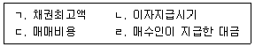
- ㄱ, ㄴ
- ㄱ, ㄹ
- ㄴ, ㄷ
- ㄴ, ㄹ
- ㄷ, ㄹ
(정답률: 12%)
102. 가등기에 관한 설명으로 틀린 것은?
- 가등기권리자는 가등기를 명하는 법원의 가처분명령이 있는 경우에는 단독으로 가등기를 신청할 수 있다.
- 근저당권 채권최고액의 변경등기청구권을 보전하기 위해 가등기를 할 수 있다.
- 가등기를 한 후 본등기의 신청이 있을 때에는 가등기의 순위번호를 사용하여 본등기를 하여야 한다.
- 임차권설정등기청구권보전 가등기에 의한 본등기를 한 경우 가등기 후 본등기 전에 마쳐진 저당권설정등기는 직권말소의 대상이 아니다.
- 등기관이 소유권이전등기청구권보전 가등기에 의한 본등기를 한 경우, 가등기 후 본등기 전에 마쳐진 해당 가등기상권리를 목적으로 하는 가처분등기는 직권으로 말소한다.
(정답률: 12%)
103. 등기의 효력에 관한 설명으로 틀린 것은? (다툼이 있으면 판례에 따름)
- 등기관이 등기를 마친 경우 그 등기는 접수한 때부터 효력이 발생한다.
- 소유권이전등기청구권 보전을 위한 가등기에 기한 본등기가 된 경우 소유권이전의 효력은 본등기시에 발생한다.
- 사망자 명의의 신청으로 마쳐진 이전등기에 대해서는 그 등기의 무효를 주장하는 자가 현재의 실체관계와 부합하지 않음을 증명할 책임이 있다.
- 소유권이전등기청구권 보전을 위한 가등기권리자는 그 본등기를 명하는 판결이 확정된 경우라도 가등기에 기한 본등기를 마치기 전 가등기만으로는 가등기된 부동산에 경료된 무효인 중복소유권보존등기의 말소를 청구할 수 없다.
- 폐쇄된 등기기록에 기록되어 있는 등기사항에 관한 경정등기는 할 수 없다.
(정답률: 18%)
104. 부동산등기법상 신탁등기에 관한 설명으로 옳은 것을 모두 고른 것은?
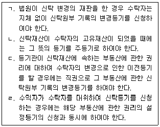
- ㄱ, ㄴ
- ㄴ, ㄷ
- ㄷ, ㄹ
- ㄱ, ㄴ, ㄹ
- ㄱ, ㄷ, ㄹ
(정답률: 0%)
1⑤. 지방세법상 취득세에 관한 설명으로 틀린 것은?
- ｢도시 및 주거환경정비법｣에 따른 재건축조합이 재건축사업을 하면서 조합원으로부터 취득하는 토지 중 조합원에게 귀속되지 아니하는 토지를 취득하는 경우에는 같은 법에 따른 소유권이전 고시일의 다음 날에 그 토지를 취득한 것으로 본다.
- 취득세 과세물건을 취득한 후에 그 과세물건이 중과세율의 적용대상이 되었을 때에는 취득한 날부터 60일 이내에 중 과세율을 적용하여 산출한 세액에서 이미 납부한 세액(가산세 포함)을 공제한 금액을 신고하고 납부하여야 한다.
- 대한민국 정부기관의 취득에 대하여 과세하는 외국정부의 취득에 대해서는 취득세를 부과한다.
- 상속으로 인한 취득의 경우에는 상속개시일에 취득한 것으로 본다.
- 부동산의 취득은 ｢민법｣등 관계 법령에 따른 등기ㆍ등록 등을 하지 아니한 경우라도 사실상 취득하면 취득한 것으로 본다.
(정답률: 12%)
106. 소득세법상 미등기양도자산(미등기양도제외자산 아님)인 상가건물의 양도에 관한 내용으로 옳은 것을 모두 고른 것은?
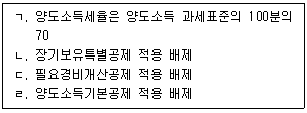
- ㄱ, ㄴ, ㄷ
- ㄱ, ㄴ, ㄹ
- ㄱ, ㄷ, ㄹ
- ㄴ, ㄷ, ㄹ
- ㄱ, ㄴ, ㄷ, ㄹ
(정답률: 0%)
107. 지방세법상 취득세 납세의무에 관한 설명으로 옳은 것은?
- 토지의 지목을 사실상 변경함으로써 그 가액이 증가한 경우에는 취득으로 보지 아니한다.
- 상속회복청구의 소에 의한 법원의 확정판결에 의하여 특정 상속인이 당초 상속분을 초과하여 취득하게 되는 재산가액은 상속분이 감소한 상속인으로부터 증여받아 취득한 것으로 본다.
- 권리의 이전이나 행사에 등기 또는 등록이 필요한 부동산을 직계존속과 서로 교환한 경우에는 무상으로 취득한 것으로 본다.
- 증여로 인한 승계취득의 경우 해당 취득물건을 등기ㆍ등록하더라도 취득일부터 60일 이내에 공증받은 공정증서에 의하여 계약이 해제된 사실이 입증되는 경우에는 취득한 것으로 보지 아니한다.
- 증여자가 배우자 또는 직계존비속이 아닌 경우 증여자의 채무를 인수하는 부담부 증여의 경우에는 그 채무액에 상당하는 부분은 부동산등을 유상으로 취득하는 것으로 본다.
(정답률: 24%)
108. 지방세법상 다음에 적용되는 재산세의 표준세율이 가장 높은 것은? (단, 재산세 도시지역분은 제외하고, 지방세관계법에 의한 특례는 고려하지 않음)
- 과세표준이 5천만원인 종합합산과세대상 토지
- 과세표준이 2억원인 별도합산과세대상 토지
- 과세표준이 1억원인 광역시의 군지역에서 ｢농지법｣에 따른 농업법인이 소유하는 농지로서 과세기준일 현재 실제 영농에 사용되고 있는 농지
- 과세표준이 5억원인 ｢수도권정비계획법｣에 따른 과밀억제권역 외의 읍ㆍ면 지역의 공장용 건축물
- 과세표준이 1억 5천만원인 주택(별장 제외. 1세대 1주택에 해당되지 않음)
(정답률: 12%)
109. 지방세법상 재산세에 관한 설명으로 틀린 것은? (단, 주어진 조건 외에는 고려하지 않음)
- 토지에 대한 재산세의 과세표준은 시가표준액에 공정시장가액비율(100분의 70)을 곱하여 산정한 가액으로 한다.
- 지방자치단체가 1년 이상 공용으로 사용하는 재산으로서 유료로 사용하는 경우에는 재산세를 부과한다.
- 재산세 물납신청을 받은 시장ㆍ군수ㆍ구청장이 물납을 허가하는 경우 물납을 허가하는 부동산의 가액은 물납허가일 현재의 시가로 한다.
- 주택의 토지와 건물 소유자가 다를 경우 해당 주택에 대한 세율을 적용할 때 해당 주택의 토지와 건물의 가액을 합산한 과세표준에 주택의 세율을 적용한다.
- 주택공시가격이 6억원인 주택에 대한 재산세의 산출세액이 직전 연도의 해당 주택에 대한 재산세액 상당액의 100분의 110을 초과하는 경우에는 100분의 110에 해당하는 금액을 해당 연도에 징수할 세액으로 한다.
(정답률: 24%)
110. 지방세법상 시가표준액에 관한 설명으로 옳은 것을 모두 고른 것은?
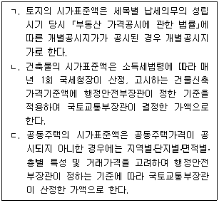
- ㄱ
- ㄱ, ㄴ
- ㄱ, ㄷ
- ㄴ, ㄷ
- ㄱ, ㄴ, ㄷ
(정답률: 6%)
111. 거주자인 개인 乙은 甲이 소유한 부동산(시가 6억원)에 전세기간 2년, 전세보증금 3억원으로 하는 전세계약을 체결하고, 전세권 설정등기를 하였다. 지방세법상 등록면허세에 관한 설명으로 옳은 것은?
- 과세표준은 6억원이다.
- 표준세율은 전세보증금의 1천분의 8이다.
- 납부세액은 6천원이다.
- 납세의무자는 乙이다.
- 납세지는 甲의 주소지이다.
(정답률: 24%)
112. 거주자인 개인 甲이 乙로부터 부동산을 취득하여 보유하고 있다가 丙에게 양도하였다. 甲의 부동산 관련조세의 납세의무에 관한 설명으로 틀린 것은? (단, 주어진 조건 외에는 고려하지 않음)
- 甲이 乙로부터 증여받은 것이라면 그 계약일에 취득세 납세의무가 성립한다.
- 甲이 乙로부터 부동산을 취득 후 재산세 과세기준일까지 등기하지 않았다면 재산세와 관련하여 乙은 부동산 소재지 관할 지방자치단체의 장에게 소유권변동사실을 신고할 의무가 있다.
- 甲이 종합부동산세를 신고납부방식으로 납부하고자 하는 경우 과세표준과 세액을 해당 연도 12월 1일부터 12월 15일까지 관할 세무서장에게 신고하는 때에 종합부동산세 납세의무는 확정된다.
- 甲이 乙로부터 부동산을 40만원에 취득한 경우 등록면허세 납세의무가 있다.
- 양도소득세의 예정신고만으로 甲의 양도소득세 납세의무가 확정되지 아니한다.
(정답률: 0%)
113. 거주자인 개인 甲은 국내에 주택 2채(다가구주택 아님) 및 상가건물 1채를 각각 보유하고 있다. 甲의 2021년 귀속 재산세 및 종합부동산세에 관한 설명으로 틀린 것은? (단, 甲의 주택은 종합부동산세법상 합산배제주택에 해당하지 아니하며, 지방세관계법상 재산세 특례 및 감면은 없음)
- 甲의 주택에 대한 재산세는 주택별로 표준세율을 적용한다.
- 甲의 상가건물에 대한 재산세는 시가표준액에 법령이 정하는 공정시장가액비율을 곱하여 산정한 가액을 과세표준으로 하여 비례세율로 과세한다.
- 甲의 주택분 종합부동산세액의 결정세액은 주택분 종합부동산세액에서 '(주택의 공시가격 합산액 - 6억원) ×종합부동산세 공정시장가액비율 × 재산세 표준세율'의 산식에 따라 산정한 재산세액을 공제하여 계산한다.
- 甲의 상가건물에 대해서는 종합부동산세를 과세하지 아니한다.
- 甲의 주택에 대한 종합부동산세는 甲이 보유한 주택의 공시가격을 합산한 금액에서 6억원을 공제한 금액에 공정시장가액비율(100분의 95)을 곱한 금액(영보다 작은 경우는 영)을 과세표준으로 하여 누진세율로 과세한다.
(정답률: 18%)
114. 종합부동산세법상 1세대 1주택자에 관한 설명으로 옳은 것은?
- 과세기준일 현재 세대원 중 1인과 그 배우자만이 공동으로 1주택을 소유하고 해당 세대원 및 다른 세대원이 다른 주택을 소유하지 아니한 경우 신청하지 않더라도 공동명의 1주택자를 해당 1주택에 대한 납세의무자로 한다.
- 합산배제 신고한 ｢문화재보호법｣에 따른 국가등록문화재에 해당하는 주택은 1세대가 소유한 주택 수에서 제외한다.
- 1세대가 일반 주택과 합산배제 신고한 임대주택을 각각 1채씩 소유한 경우 해당 일반 주택에 그 주택소유자가 실제 거주하지 않더라도 1세대 1주택자에 해당한다.
- 1세대 1주택자는 주택의 공시가격을 합산한 금액에서 6억원을 공제한 금액에서 다시 3억원을 공제한 금액에 공정시장가액비율을 곱한 금액을 과세표준으로 한다.
- 1세대 1주택자에 대하여는 주택분 종합부동산세 산출세액에서 소유자의 연령과 주택 보유기간에 따른 공제액을 공제율 합계 100분의 70의 범위에서 중복하여 공제한다.
(정답률: 12%)
115. 2021년 귀속 토지분 종합부동산세에 관한 설명으로 옳은 것은? (단, 감면과 비과세와 지방세특례제한법 또는 조세특례제한법은 고려하지 않음)
- 재산세 과세대상 중 분리과세대상 토지는 종합부동산세 과세대상이다.
- 종합부동산세의 분납은 허용되지 않는다.
- 종합부동산세의 물납은 허용되지 않는다.
- 납세자에게 부정행위가 없으며 특례제척기간에 해당하지 않는 경우 원칙적으로 납세의무 성립일부터 3년이 지나면 종합부동산세를 부과할 수 없다.
- 별도합산과세대상인 토지의 재산세로 부과된 세액이 세부담 상한을 적용받는 경우 그 상한을 적용받기 전의 세액을 별도합산과세대상 토지분 종합부동산세액에서 공제한다.
(정답률: 18%)
116. 다음은 거주자 甲의 상가건물 양도소득세 관련 자료이다. 이 경우 양도차익은? (단, 양도차익을 최소화하는 방향으로 필요경비를 선택하고, 부가가치세는 고려하지 않음)
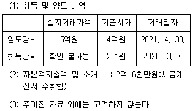
- 2억원
- 2억 4천만원
- 2억 4천4백만원
- 2억 5천만원
- 2억 6천만원
(정답률: 24%)
117. 소득세법상 양도소득세 과세대상 자산의 양도 또는 취득의 시기로 틀린 것은?
- ｢도시개발법｣에 따라 교부받은 토지의 면적이 환지처분에 의한 권리면적보다 증가 또는 감소된 경우: 환지처분의 공고가 있은 날
- 기획재정부령이 정하는 장기할부조건의 경우: 소유권이 전등기(등록 및 명의개서를 포함) 접수일ㆍ인도일 또는 사용수익일 중 빠른 날
- 건축허가를 받지 않고 자기가 건설한 건축물의 경우: 그 사실상의 사용일
- ｢민법｣제245조 제1항의 규정에 의하여 부동산의 소유권을 취득하는 경우: 당해 부동산의 점유를 개시한 날
- 대금을 청산한 날이 분명하지 아니한 경우: 등기부ㆍ등록부 또는 명부 등에 기재된 등기ㆍ등록접수일 또는 명의개서일
(정답률: 6%)
118. 거주자 甲은 2015년에 국외에 1채의 주택을 미화 1십만 달러(취득자금 중 일부 외화 차입)에 취득하였고, 2021년에 동 주택을 미화 2십만 달러에 양도하였다. 이 경우 소득세법상 설명으로 틀린 것은? (단, 甲은 해당 자산의 양도일까지 계속 5년 이상 국내에 주소를 둠)
- 甲의 국외주택에 대한 양도차익은 양도가액에서 취득가액과 필요경비개산공제를 차감하여 계산한다.
- 甲의 국외주택 양도로 발생하는 소득이 환율변동으로 인하여 외화차입금으로부터 발생하는 환차익을 포함하고 있는 경우에는 해당 환차익을 양도소득의 범위에서 제외한다.
- 甲의 국외주택 양도에 대해서는 해당 과세기간의 양도소득금액에서 연 250만원을 공제한다.
- 甲은 국외주택을 3년 이상 보유하였음에도 불구하고 장기보유특별공제액은 공제하지 아니한다.
- 甲은 국외주택의 양도에 대하여 양도소득세의 납세의무가 있다.
(정답률: 18%)
119. 소득세법상 미등기양도제외자산을 모두 고른 것은?
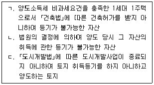
- ㄱ
- ㄴ
- ㄱ, ㄴ
- ㄴ, ㄷ
- ㄱ, ㄴ, ㄷ
(정답률: 17%)
120. 소득세법상 배우자 간 증여재산의 이월과세에 관한 설명으로 옳은 것은?
- 이월과세를 적용하는 경우 거주자가 배우자로부터 증여받은 자산에 대하여 납부한 증여세를 필요경비에 산입하지 아니한다.
- 이월과세를 적용받은 자산의 보유기간은 증여한 배우자가 그 자산을 증여한 날을 취득일로 본다.
- 거주자가 양도일부터 소급하여 5년 이내에 그 배우자(양도 당시 사망으로 혼인관계가 소멸된 경우 포함)로부터 증여받은 토지를 양도할 경우에 이월과세를 적용한다.
- 거주자가 사업인정고시일부터 소급하여 2년 이전에 배우자로부터 증여받은 경우로서 ｢공익사업을 위한 토지 등의 취득 및 보상에 관한 법률｣에 따라 수용된 경우에는 이월과세를 적용하지 아니한다.
- 이월과세를 적용하여 계산한 양도소득결정세액이 이월과세를 적용하지 않고 계산한 양도소득결정세액보다 적은 경우에 이월과세를 적용한다.
(정답률: 12%)